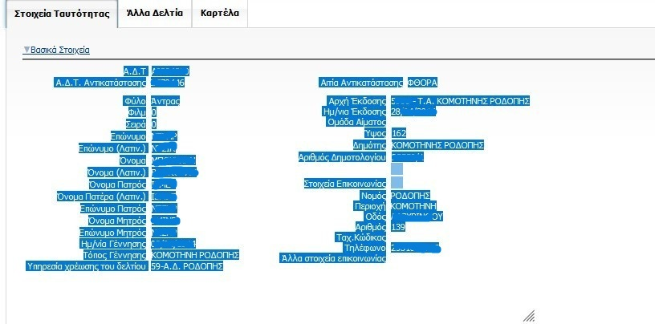
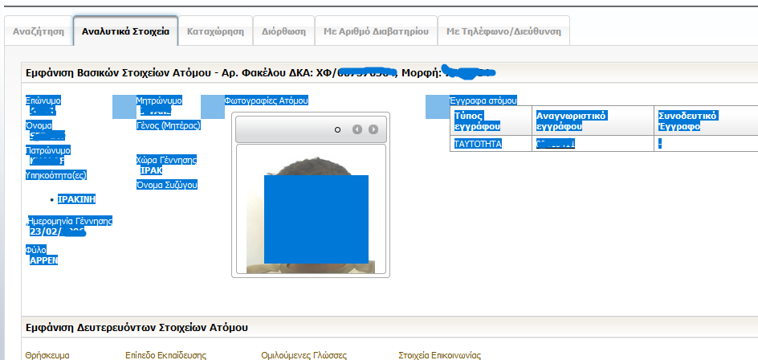
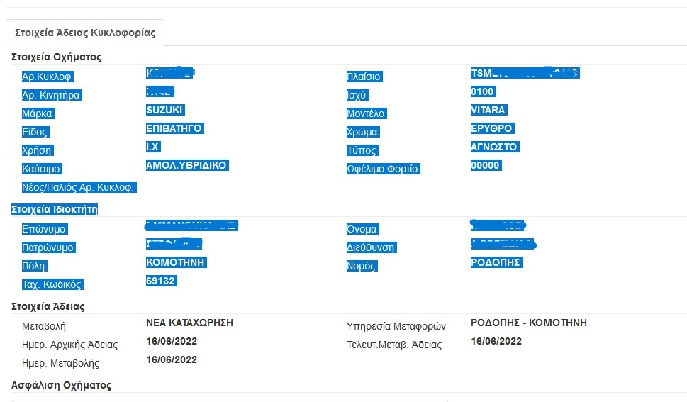

→
Με χρήση του πεδίου Παθών
Με χρήση του πεδίου Δράστης
Ενδοοικογενειακή
Τροχονομικά
Με Εκθέσεις-πρότυπα χρήστη
Υπηρεσιακό Σημείωμα
Υπεύθυνη Δήλωση
×



Συμπληρώνονται στις Ρυθμίσεις
Προστίθενται αυτόματα ανάλογα με το φύλο του παθόντα/δράστη/ανακριτικού
Παράδειγμα: {oS} = "ο" για άνδρα δράστη, {touV} = "της" για γυναίκα παθόντα, {oYA1} = "Ο" για υπογραφή άντρα Ά ανακριτικού, {tonAS} = "την" για γυναίκα αστυνομικό. Ο αστυνομικός θεωρείται άντρας αν δεν έχει οριστεί φύλο